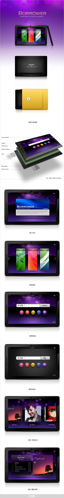

一款社区化的借物系统，用户登入软件商城免费下载客户端即可使用。用户登入后，可以与社区的朋友互相联系与交换物品，物品不用支付购买费用，主要取决于邻居之间的信任，同时又能在自己家周围找到同样爱好的朋友。沐川系受邀承担其整体的用户体验设计，包含界面交互设计和硬件工业设计。
12.05.2010
一款社区化的借物系统，用户登入软件商城免费下载客户端即可使用。用户登入后，可以与社区的朋友互相联系与交换物品，物品不用支付购买费用，主要取决于邻居之间的信任，同时又能在自己家周围找到同样爱好的朋友。沐川系受邀承担其整体的用户体验设计，包含界面交互设计和硬件工业设计。
